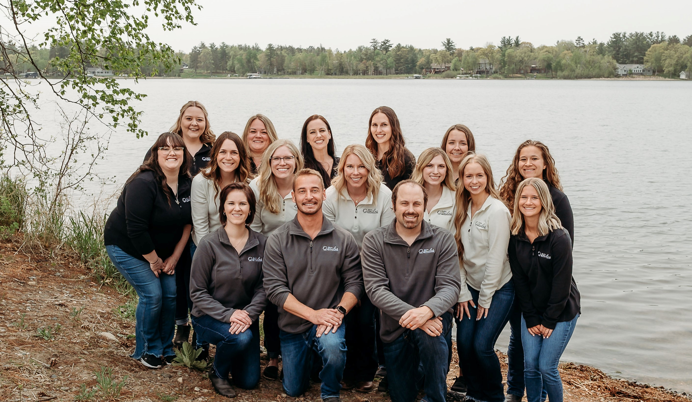
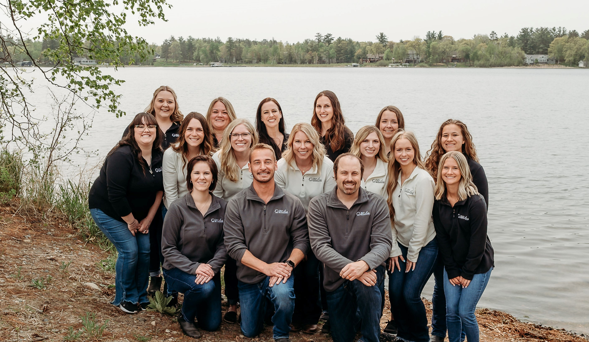

Lori wrote:
"Such a warm welcoming environment! Dentist and staff are outstanding.
True small town hospitality with incredible professionalism."
Mike and Holli said:
"Dr. Luke Saved Vacation!! When a rouge fruit snack attacked my 8 year old's braces leaving her with a wire to the gums we walked
into Dr. Luke's office and he was able to do a temporary fix to allow vacation to continue without pain! Thank you Nisswa Smiles & Dr. Luke for truly keeping us smiling!"
Taylor said:
"I received excellent care at my recent Dentist Appointment. Thank you for all that you do. Keep on being awesome Dr Klabo."
Caleb wrote:
"Not many places can greet someone by first name as soon as they come through the door, but Nisswa Smiles can.
I live close to other good dentist offices but I choose to drive an extra 15 miles just to get my teeth cleaned here.
Good staff, knowledgeable and friendly."
Bill from Nisswa says:
"If you thought getting a tooth crowned was just about as boring and
painful as watching the Vikings lose, you've got something to learn. I
broke a tooth while driving and eating beef jerky. (I don't think this
is against the law yet.)
My regular dentist was three hours away, and I needed this taken
care of now!
I did Google search on “Nisswa Dentist“ and Nisswa Smiles, Dr. Luke
Waln, DDS showed up. I made an appointment.
This place is located right in the middle of downtown Nisswa, in case
you like to shop or get a cup of coffee. From the minute I walked in,
I knew this is not your typical dental office. The place looks like a
log cabin on Gull Lake, complete with fireplace and leather sofa.
There's even a kids corner! I wanted to try it out but felt a little
too big and old to sit in those small chairs.
Once in the procedure chair, I felt like I was in a rocket ship,
completely equipped with an HD TV and they gave me the remote. My
wife doesn't do that! I flipped through the weather channel, CNN, and
Fox News. I felt productive even if I wasn't. Dr. Waln proceeded to
take pictures of my broken tooth and showed me the problem and his
recommendation on the HD TV. Not a pretty picture but very
effective.
The neatest part was when Dr. Waln designed my crown on his computer
right in front of me. He made a perfect tooth, much better than the
way we used to get crowns. You know, take an impression and come back
a week or two later to get it installed.
I walked in with a broken tooth and when I walked out, I was all fixed
up. Job complete, one happy camper! This took weeks in the past Dr.
Waln does it in a couple hours. Not bad for a first time experience.
They even called the next day to see how I was doing.
If you need dental work in the Brainerd Lakes area, you need to check
this out. I give it five stars. Free coffee to boot!"
John said:
"My first visit to Nisswa Smiles was over 5 years ago and from the minute I walked in the door I knew I had found a new Dentist. The entire staff is extremely welcoming and friendly.
The offices feel clean, warm, welcoming and cozy. This doesn't feel like a typical sterile dentist office with white walls. It really does feel like a family yet packs all of the latest technology.
This is a dentist office that I actually enjoy visiting!"
- A+ for customer service
- A+ for professionalism
- A+ for being a great dental team.
Carolee wrote:
"Just had an “ancient” silver filling removed and replaced with a beautiful porcelain one. Granted no one knows it's there but me, but it looks and feels great!! Thank you"
Sarah wrote:
"What a great dental office! Moved here from IL and brought my 3 kids here along with myself and the staff was amazing!! It was my youngest sons first time to a dentist and he has sensory issues and The doctor was absolutely amazing along with the hygienist.
Highly recommend this place!"
Mariana wrote:
"Warm friendly surroundings.. followed by a very professional staff and most importantly Dr. Waln explained the procedure as he went along. Never a bit of pain.. job well done.. Thank you.
DEFINITELY, would recommend NISSWA SMILES."
Sheila wrote:
"Nisswa Smiles makes going to the dentist a relaxing and positive experience! They are very knowledgeable and treat all their patients like family.
They take pride in always giving the best customer service. I unfortunately have moved 2 hours away, but I will still be making an appointment there this summer... well worth it!"
Nancy wrote:
"I have always felt comfortable seeing Dr. Klabo.
He has been honest with me and has had my best interest at heart."
Eli wrote:
"Quick and friendly, fixed a couple fillings a different place screwed up, very happy and would recommend to anyone."
 
